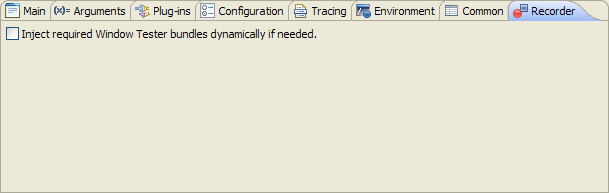
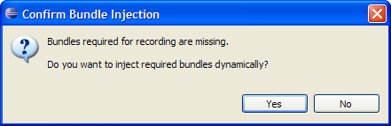

Dynamically Injecting Required Recording Bundles
The WindowTester Pro event recorder uses a standard launch
configuration to launch the application to record. For the recorder
to work, a number of our bundles/plug-ins need to be present in the
runtime. These plug-ins can be included in the launch configuration
either manually, by selecting the bundles in the Plug-ins
tab of the launch configuration or dynamically, by letting
WindowTester Pro inject those bundles into the classpath of the
launch configuration. Bundle injection is an option in the
recording launch configuration’s Recorder tab that can
be set manually before launching a recording session.

If the option, "Inject required WindowTester Pro bundles
dynamically if needed", is enabled and any of the recording
bundles is missing from the launch configuration, the bundles will
be injected dynamically without user interaction. If the option is
not enabled, the user is asked to confirm whether to inject the
bundles dynamically.

Selecting No will launch the application to record but it
may or may not show the recording control.
Selecting Yes will do the following:
- Dynamically inject the required recorder bundles into the
classpath of the launch configuration.
- Launch the application to record and open the recording control.
- Enable the option in the recording launch configuration to
inject the bundles dynamically if needed. This ensures that the
next time a recording is launched using the same launch
configuration, the user will not be prompted again.